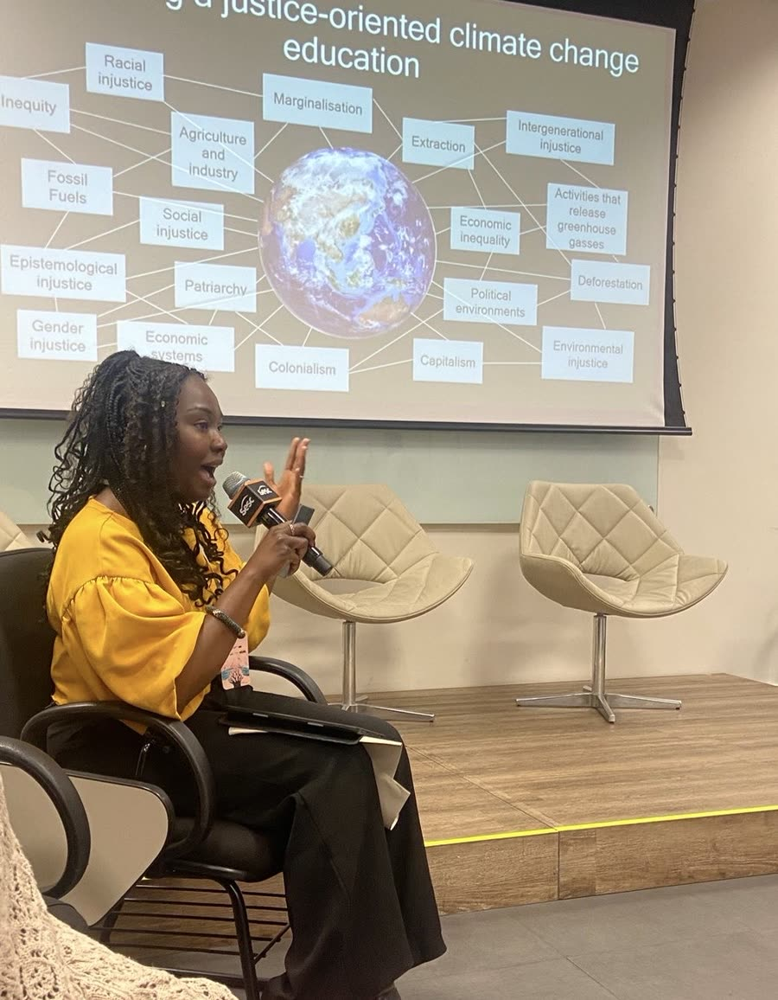

Research, Advocacy, Policy & Community Engagement
I help organisations design research, strengthen policy and advocacy, engage communities, and communicate complex issues clearly, so that research reaches decision-makers and communities.
My work combines participatory research, policy analysis, facilitation and storytelling to support projects that centre lived experience and deliver lasting change. Drawing on expertise in education, gender equality, youth participation, international development and social justice, I help organisations generate evidence, influence decision-making and amplify community voices.
I have worked in UK central government and the international NGO sector, and hold a postgraduate degree in Education, Gender and International Development from UCL. I am currently undertaking a PhD at the University of Glasgow, exploring digital storytelling as a decolonial approach to climate justice education.

What I can help with
Research and insight
For organisations that need credible evidence rooted in lived experience.
I design and deliver qualitative, participatory research, including literature reviews, stakeholder consultations, interviews, focus groups and creative research approaches.
Policy and advocacy
For organisations that need to turn evidence into influence.
I help organisations translate evidence into action through policy analysis, advocacy strategies, briefings, consultations and stakeholder engagement.
Community engagement
For organisations that want communities to help shape their work, not just receive it.
I design inclusive approaches that enable communities, young people and stakeholders to shape research, programmes and policy.
Facilitation and training
For teams, networks and partnerships that need a skilled, neutral facilitator.
I facilitate workshops, roundtables, learning sessions and strategic discussions that support learning, collaboration and action.
Storytelling and communications
For organisations that want their research read, understood and used.
I use writing, narrative and creative engagement to help organisations communicate research, share knowledge and connect with diverse audiences.
Areas of expertise
- Education
- Global education
- Climate justice education
- Youth participation
- Gender equality
- International development
- Community storytelling
- Participatory research
- Policy and advocacy
- Research communications
- Knowledge exchange
- Decolonial approaches
Selected work
I am passionate about making research accessible, engaging and relevant to communities. Alongside academic research, I use storytelling and creative approaches to explore lived experience, culture, identity and social change.
Finalist, WHO Health for All Film Festival
Mwansa's Story
I wrote the script for this four-minute animation, made by PositiveNegatives with Ipas and the London School of Economics. It follows Mwansa, a Zambian schoolgirl, and the barriers girls her age face in getting contraception and safe abortion care. It draws on findings from the MRC/FCDO-funded research project Improving adolescent access to contraception and abortion-related care, led by Professor Ernestina Coast.
The film was a finalist in the Better Health and Well-being category of the WHO Health for All Film Festival, among nearly 1,200 entries from around the world. It is available in English and Nyanja.
My role: As scriptwriter, I turned hundreds of girls' testimonies into one story that stays true to their experiences.
Artistic collaborators
- Ipas Zambia project lead: Kudzai Meda Chilufya
- Scriptwriter: Chanju Mwanza
- Artist: Debasmita Dasgupta
- Animator: Diana Garcia
- Voice talent: Kazya Musuka, Ngosa Chungu, Isaac Chambra, Mutamula Mwale
- Creative consultant: Naomi Doras
- Sound design and music: Rowan Bishop
Research and development
- Kudzai Meda Chilufya
- Tamara Fetters
- Professor Ernestina Coast
The Zambian Narratives Project
Culturally relevant, bilingual children's books and read-along videos in English and Zambia's national languages.
Get in touch to request examples of research reports, policy briefings, facilitation work and storytelling projects.
Interested in working together?
I am available for research, policy, engagement, facilitation and storytelling projects with a range of organisations, including charities, NGOs, private foundations, academic institutions, community organisations and more.
I work on part-time consultancies, workshops, short-term projects and ongoing partnerships.
I'd love to hear from you. Get in touch to discuss a project or collaboration.